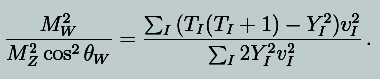
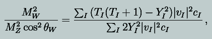

| Page | Position | Replace | by | Thanks go to |
|---|---|---|---|---|
| 17 | Eq. (2.4) | The quantity (1-v2)-½ should not be an overall factor. It should multiply only the elements of the first two rows. | Ambika Prasad Panigrahi, Berhampur University | |
| 18 | Eq. (2.9) | The quantity (1-u2)-½ should not be an overall factor. It should multiply only the elements of the first two rows. | Ambika Prasad Panigrahi, Berhampur University | |
| 106 | Eq. (4.204) | In the fraction that appears in the argument of the
delta function, the term |
Christian Farina, University of Pittsburgh | |
| 122 | Eq. (5.40) | In the denominator of the right side, the Mandelstam
variable appears, so it should be |
Christian Farina, University of Pittsburgh | |
| 128 | Eq. (5.67) | The symbol k should not be boldfaced, i.e., we imply the 4-vector k1 | ||
| 243 | before Eq. (9.9) | decays with a lifetime Γ | decays with a lifetime Γ-1 | Asim Ray, Visva-Bharati University (retired) |
| 309 | Argument for Eq. (11.62) | Eq. (11.62) can be obtained directly from Eq. (11.59), using Eq. (11.54). No need to invoke Eq. (11.60). | ||
| 310 | Argument for Eq. (11.63) | The argument is partly circular here. It is easier to
calculate the normalization constant first. For this, note that there
is always an SU(2) subgroup of any SU(N) for N>2. The fundamental of
SU(N) decomposes under the SU(2) subgroup as a doublet
and N−2 singlets. Taking Kronecker product of N and
N* representations, we then obtain
3 + (2N − 4) doublets + (singlets) of SU(2). The normalization constant of the adjoint of SU(N) is the sum of the normalization constants of these SU(2) representations, i.e., C(ad) = 2 + ½(2N − 4) = N. Then Eq. (11.59) can be used to obtain Eq. (11.63). |
||
| 330–332 | Eq (12.37) onwards | All references to the Casimir invariant C2 should be changed to the normalization constant C defined in Eq (11.39, p 305). The reason for the occurrence of this constant has been described correctly in the last sentence starting on page 331, but the constant has been wrongly referred to as the Casimir invariant throughout §12.2.3. | ||
| 389 | Eq. (13.26) | There should be an integral sign before the d3p factors on the right side of the equation. | Roopam Sinha, Saha Institute | |
| 392 | Eq. (13.37), 2nd line, denominator | (2π3) | (2π)3 | |
| 397 | Eq. (13.61), 1st line | The argument of the delta function should be instead of | Roopam Sinha, Saha Institute | |
| 398 | Eq. (13.63), right side | Q2α2 | Q2α2 | Roopam Sinha, Saha Institute |
| 403 | Eq. (13.82) | The crescented 's' in the denominator of the expression in the middle (i.e., the one between two equality signs) will have a square. | Roopam Sinha, Saha Institute | |
| 416 | Eq. (14.14) | The second equation in this line should have Q− in place of Q+. | Christian Farina, University of Pittsburgh | |
| 467 | Eq. (16.30) |  |  where cI is 2 for complex multiplets and 1 for real multiplets. |
Anirban Kundu, Calcutta University |
| 478 | Eq. (16.63) | A factor of Zμ is missing on the right side. | Tarak Nath Maity, IIT Kharagpur | |
| 485 | Eq. (17.16), 1st line | g'Bμ | g'Bμ | Shouvik Pal, Calcutta University |
| Page | Where | Replace | by | Thanks go to |
|---|---|---|---|---|
| 26 | last line before §2.6.2 | the factor | the factor | Christian Farina, University of Pittsburgh |
| 66 | 1st line after Eq. (4.18) | called homogeneous | called homogeneous | Christian Farina, University of Pittsburgh |
| 70 | 1st line of the paragraph containing Eq. (4.47) | solutions the Dirac equation | solutions the Dirac equation | Christian Farina, University of Pittsburgh |
| 76 | Ex. 4.6, 2nd line | same relation | same relation | Christian Farina, University of Pittsburgh |
| 78 | 1st line after Eq (4.90) | same relation | same relation | Christian Farina, University of Pittsburgh |
| 101 | 2nd line after Eq (4.183) | constant | constant | Christian Farina, University of Pittsburgh |
| 104 | §4.12.3, 2nd para, 3rd line | dot products the | dot products the | Christian Farina, University of Pittsburgh |
| 112 | 1st para, 3rd line from the end | theories strong and the weak | theories strong and the weak | Christian Farina, University of Pittsburgh |
| 126 | 1st line after Eq. (5.53) | following the same steps | following the same steps | Christian Farina, University of Pittsburgh |
| 180 | 1st sentence of Sec. 6.9.2 | a state with a give parity | a state with a give parity | Christian Farina, University of Pittsburgh |
| 182 | 1st line of §6.9.4 | we how parity violation | we how parity violation | Christian Farina, University of Pittsburgh |
| 187 | 1st line after Eq. (6.167) | second term the | second term the | Christian Farina, University of Pittsburgh |
| 275 | Fig. (10.7) | In the topmost line of particles, the extreme right one should be Δ++ instead of Δ0 | ||
| 261 | Sentence leading into Eq. (10.24) | we find there is | we find there is | Roopam Sinha, Saha Institute |
| 310 | 4th line after Eq. (11.63) | on normalization constant | on normalization constant | Roopam Sinha, Saha Institute |
| 324 | the line before Eq. (12.14) | there is interaction vertex | there is interaction vertex | |
| 358 | 4th line after Eq. (12.133) | independently defined Euclidean space | independently defined Euclidean space | |
| 394 | line after Eq. (13.47) | we will have to | we will have to | |
| 412 | 7th line after Ex 14.3 | different of bilinears | different of bilinears | Christian Farina, University of Pittsburgh |
| 413 | next to last line of §14.1 | of the form []? | of the form []? | |